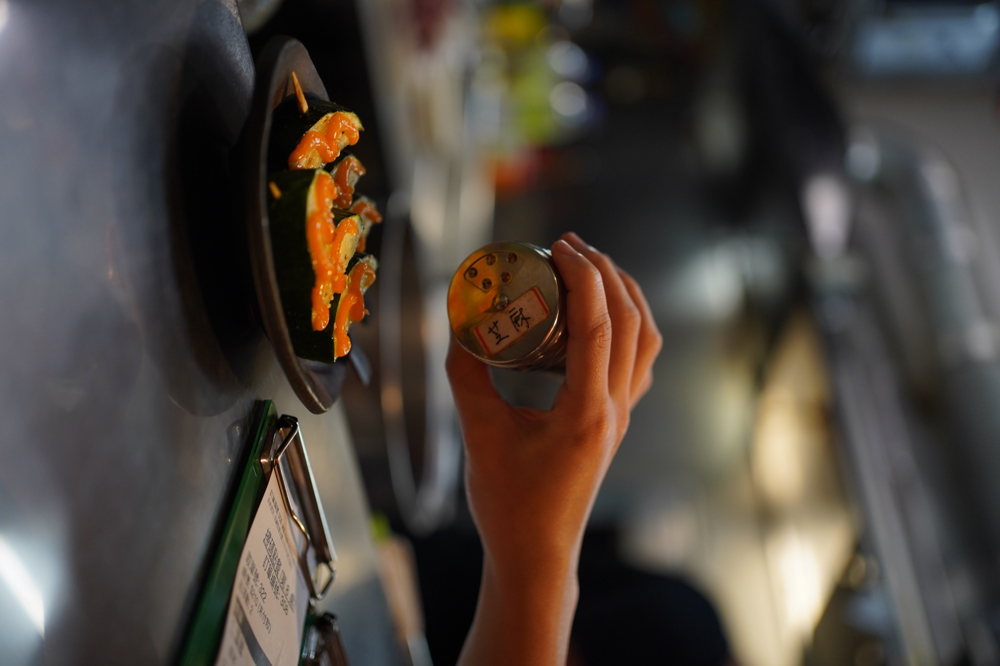
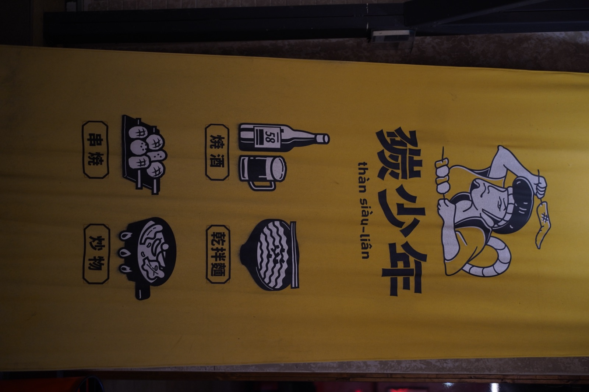
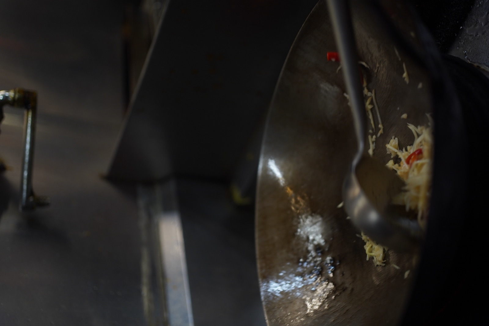
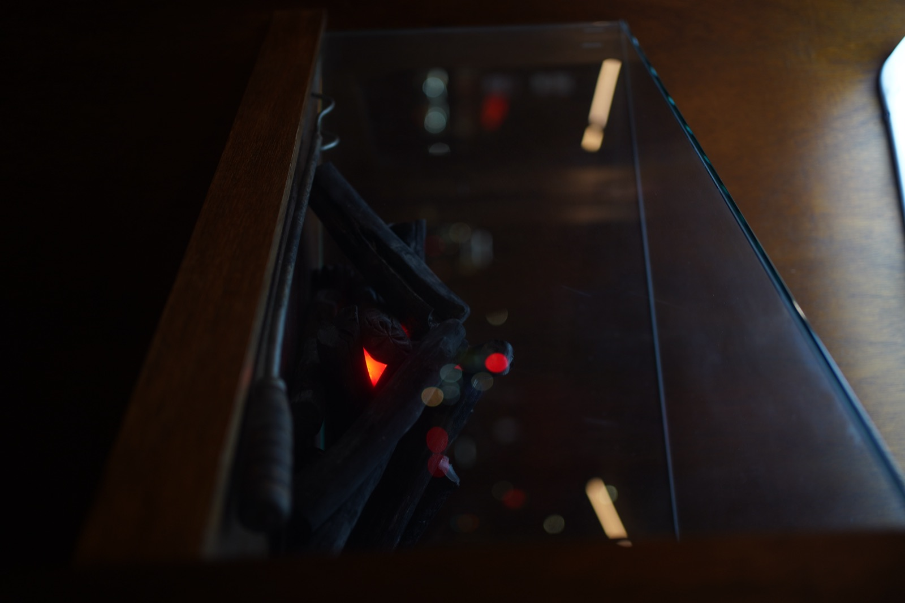

傑弗德將「炭」整合成品牌定位、產品特色與社群語言，並同步建立設備、動線、人員及 SOP。

一般居酒屋容易陷入菜色同質化；品牌雖以「炭」為名，但空間、產品、出餐、人員與行銷尚未形成能被消費者清楚記住的完整系統。
讓所有品牌與產品發展圍繞「炭」進行，研發具傳播力的代表產品，並整合裝修動線、人力配置與 SOP。
品牌從一般居酒屋概念，發展成以「炭」為核心、具備產品記憶點與年輕語言的餐飲品牌。
01 ／ 案例背景
碳少年是位於嘉義、面向年輕市場的居酒屋型品牌，需要從產品、空間到行銷建立一致的辨識度。
02
業主最早提出的需求，是希望菜單能更豐富、更有話題。但傑弗德進場後看見的問題不是數量：一般居酒屋容易陷入菜色同質化，品牌雖以「炭」為名，但空間、產品、出餐、人員與行銷尚未形成能被消費者清楚記住的完整系統。
03
問題不在於菜色數量不足，而在於品牌缺少一個能貫穿產品、體驗及傳播的核心。「炭」必須從名稱變成所有營運決策的共同原則。
04
為什麼：「炭」原本只是名稱，還沒成為實際的產品邏輯。
影響：所有後續產品與空間決策，都以「炭」為共同判準。
為什麼：品牌需要一道消費者會主動分享的產品，而不只是菜單上的一項。
影響：推出「炭歐嚕嚕套餐」等具趣味性及傳播力的代表產品。
為什麼：好賣的菜色如果廚房做不出來，最後只會拖垮出餐速度。
影響：菜單在市場需求、設備能力與出餐效率之間取得平衡。
為什麼：產品定案後，現場必須有一致的方式把它做出來。
影響：裝修動線、設備使用、人力配置與 SOP 同步整合。
為什麼：消費者對品牌的印象，來自線上與現場體驗的總和。
影響：統一品牌視覺、BI、線上行銷及實際消費體驗。
05
06
確認「炭」作為品牌核心的可行性與延伸方向。
開發代表菜色，並確認設備與出餐效率能否配合。
整合裝修動線、設備使用、人力配置與 SOP。
統一品牌視覺、BI 及線上行銷內容。
持續確認品牌識別與現場出餐體驗一致。
案例影像



07 ／ 成果
品牌從一般居酒屋概念，發展成以「炭」為核心、具備產品記憶點與年輕語言的餐飲品牌，並建立從後場到社群的完整營運架構。
以上為質性觀察與階段性成果說明，實際執行內容依合約範圍為準，不代表對特定營業額、獲利或回本時間的保證。
如果你正在準備開店、轉型，或發現原本有效的方法逐漸失去作用，我們可以先從釐清問題開始。